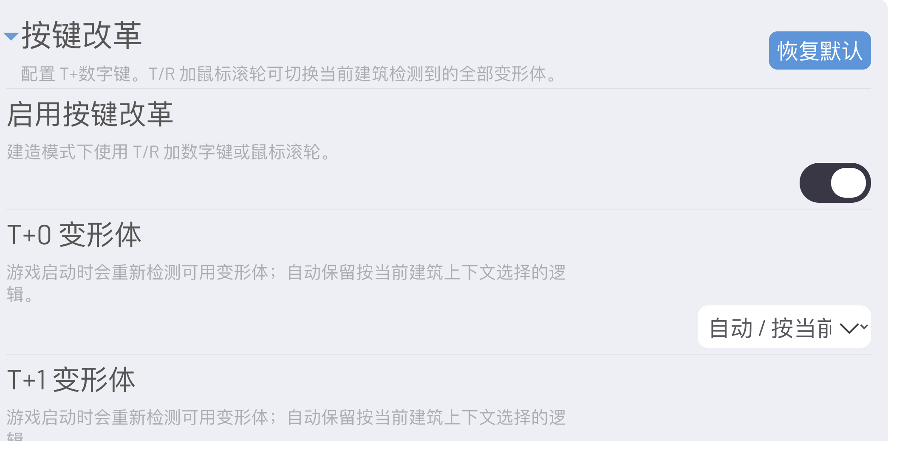

用途
Key Reform 只在建造模式接管组合输入，不影响普通滚轮缩放。它会扫描当前已注册建筑的变形体，因此也能与其他 Mod 新增的变形体共同工作。
核心功能
- 按住 T 再按数字键，可按配置选择当前建筑的变形体。
- 按住 R 再按 1 / 2 / 3 / 4，分别设置上 / 右 / 下 / 左朝向。
- 按住 T + 滚轮循环当前建筑的全部可用变形体；按住 R + 滚轮每格旋转 90°。
- 默认映射优先匹配多路平衡器：T+4、T+5、T+8、T+0、T+6 分别对应 4 / 5 / 8 / 10 / 16 路。
- 滚轮对触控板的细小 delta 做帧内累积，避免一次滑动重复跳过变形体。
使用方法
- 启用后进入「游戏模组（MODS）→ 按键改革」调整 T+0 至 T+9 的映射。
- 选择「自动 / 按当前」可保留按当前建筑上下文回退选择的逻辑。
- 组合键按住期间会阻止镜头缩放；松开组合键后普通滚轮保持原版行为。
实机截图

兼容性与注意事项
与 Balancer Variants 组合时，可快速在多路平衡器之间切换。